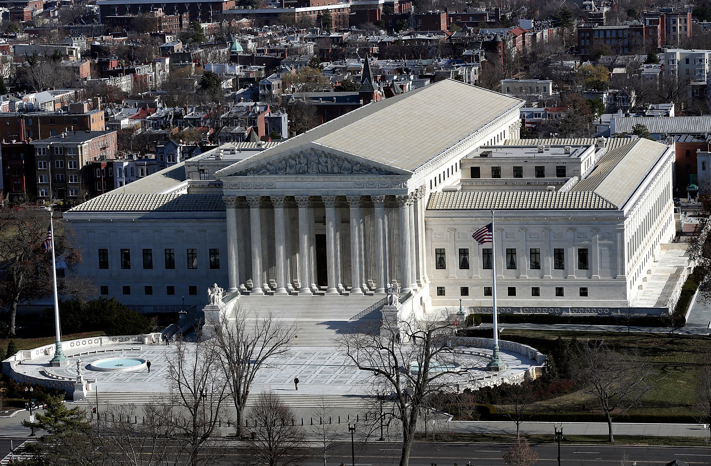
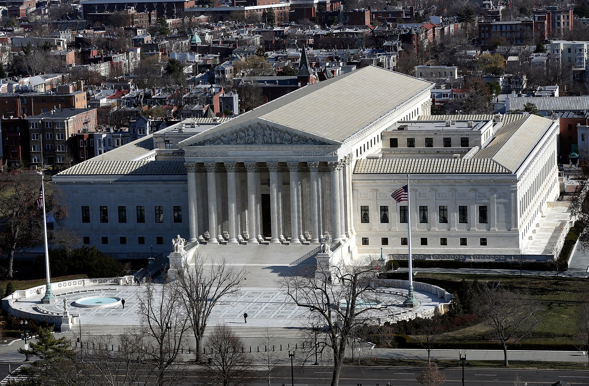

First and ground floor of the U.S Supreme Court
The main entrance to the Supreme Court Building is on the west side, facing the United States Capitol. A few low steps lead up to the 252-foot-wide oval plaza in front of the building. Flanking these steps is a pair of marble candelabra with carved panels on their square bases depicting: Justice, holding sword and scales, and The Three Fates, weaving the thread of life. On either side of the plaza are fountains, flagpoles, and benches.
The ground floor is devoted to offices and public services, including the offices of the Clerk of the Court, the Counselor to the Chief Justice, police headquarters, the Public Information Office and Press Room, the Curator’s Office and the Human Resources Office. On this floor visitors can view one of the two marble spiral staircases.
 

Judicial Branch Overview
Courtroom
Home